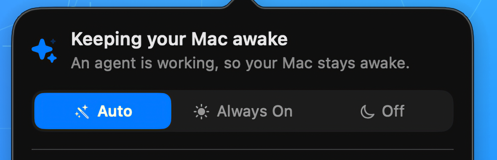

Éveillé pendant que vos agents travaillent.
Belay garde votre Mac éveillé pendant qu'un agent travaille. Quand le travail s'arrête, Belay s'efface et votre Mac peut de nouveau dormir normalement.
Détection intégrée pour Claude Code, plus des préréglages pour Codex CLI, Gemini CLI et Cline. Pour le reste, vous pouvez désigner un dossier. La détection reste sur votre Mac. Pas de compte. Pas de télémétrie. Belay n'envoie vos prompts et votre code nulle part.
Version 1.0.0, gratuit et open source. Notes de version
Nécessite macOS 14 ou plus récent. Apple silicon et Intel.
Trois modes, à un clic l'un de l'autre

Donner un coup de main
Belay est gratuit et le restera. S'il vous a sauvé une exécution, une étoile sur GitHub ne coûte rien et aide les autres à le trouver. Les rapports de bugs et les traductions valent plus que l'argent.